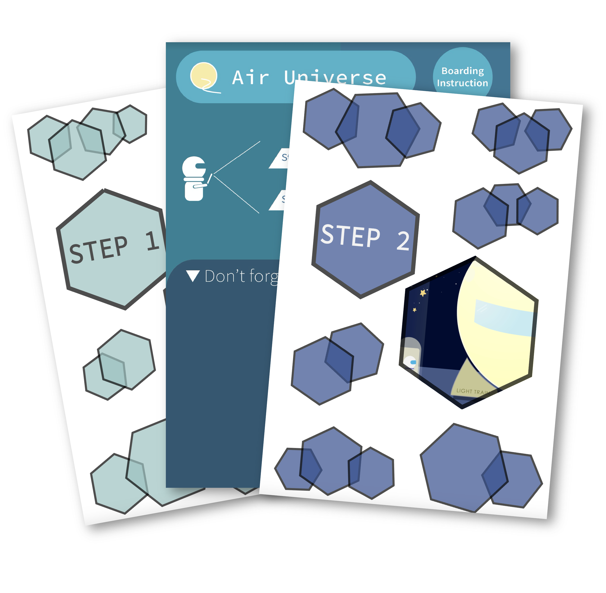
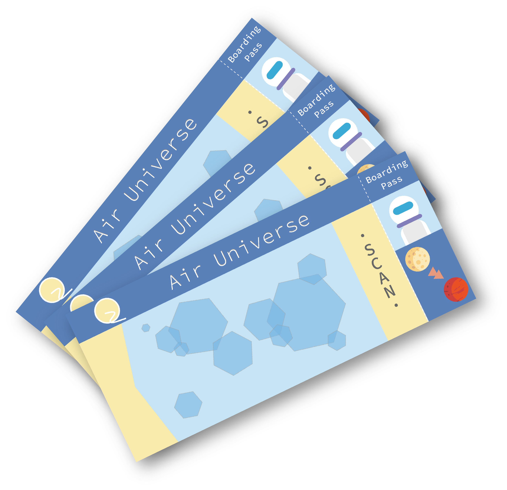

Have you ever fantasized about the future of transportation? Will the future of transportation change our lifestyle? With these questions in mind, I conceived a high-tech society of the future based on modern society. In the future, humans would travel by "light train" to different planets in the solar system, and the way they travel by "light train" is very similar to the way we travel today.
In this animation, I conceived and depicted the scene of the three stages of check-in, boarding, and takeoff. The overall style of the animation is relaxed and enjoyable, just as I look forward to the future of travel - exciting and relaxing, no matter where you go.
AR Experience
Based on the animation, my expectation for this work goes further: if the audience is no longer just the audience, but the experiencer or participant, how should they experience? Should their experiences be based on a new worldview? Or will the experiencer be able to adapt to the lifestyle of the constructed virtual future simply by existing living habits?


Based on the simplicity and relaxed style of the animation, I firmly believe that the extra information or unnecessary text will ruin the experience. Instead, the whole experience should be intuitive and not require much effort to learn. So I built the entire virtual world in Unity. I added a lot of details that weren't in the animation, such as designing and printing boarding instructions and boarding passes, how the passenger's elevator operated (visible during the experience)... The boarding instruction is scanned through a specific app on your phone or tablet to allow you to experience the full boarding process.